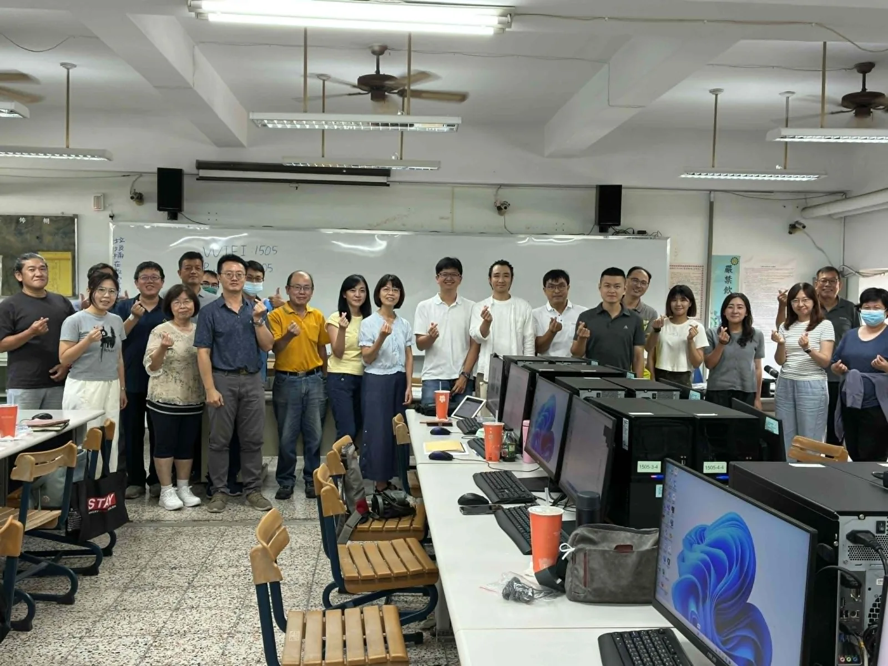

醫療
把厚厚的 SOP，變成看診時查得到的決策樹
誰診所主治醫師
本來⋯
每位病人只有 2–3 分鐘，療程選項卻很複雜；國際 SOP 每 3 個月更新一次，看完一版又出兩版。
後來⋯
把 PDF 版的 SOP 拆成可以直接查詢的決策樹，看診時能當場帶病人看懂有哪些選項。
中小企業 AI 導入顧問 · 企業內訓講師
每天在 LINE、Excel、Email 之間重複做的事，我幫你找出哪些能交給 AI，再陪團隊一路用到上手。

267天
每天公開一篇 AI 實作
9場
醫院與學校內訓
250+人次
累積學員
4.82/ 5
近兩場課後匿名問卷平均（33 份）
先對一下狀況
客戶需求、改來改去的細節，全散在 LINE 群組裡，要回頭找得翻半天。
同一個案子分散在 Excel、LINE、Email、雲端檔案，資料一直複製貼上。
SOP、規範一改版就是一大疊，員工看不完，要用的時候又找不到。
公司買了 AI 帳號，大家卻只拿來翻譯、改錯字。
不用砍掉重練。把 AI 接進你原本就在做的流程，從最花時間的那件雜事開始。
客戶案例
醫療
誰診所主治醫師
本來⋯
每位病人只有 2–3 分鐘，療程選項卻很複雜；國際 SOP 每 3 個月更新一次，看完一版又出兩版。
後來⋯
把 PDF 版的 SOP 拆成可以直接查詢的決策樹，看診時能當場帶病人看懂有哪些選項。
行銷 / KOL 經紀
誰科技大廠的 KOL 合作社群經理
本來⋯
預算在試算表、跟代理商用 LINE 溝通，再加上 Email、檔案來回傳、社群平台發文——一個案子橫跨 5 個以上的工具。
後來⋯
找出「會用 AI」跟「用得好」之間的落差，重新設計整條工作流程。
用 LINE 管工作的老闆
誰把工作群開在 LINE 的老闆、PM
本來⋯
對話散在各個群組和私訊，每次要回顧某一段，都得自己慢慢往上翻。
後來⋯
讓 AI 直接讀取電腦裡的 LINE 對話幫你整理——不用申請 API，也不用開發者帳號。
服務內容
每個方案的成果都交到你們手上，沒有黑盒子，看得到、驗收得了。
企業內訓
課程以實作為主。實作時間我會走到每個人座位旁，一個一個確認進度——很多卡點，只有看到操作畫面才說得清楚。



2026 年 9 月，佳里奇美、柳營奇美兩場匿名課後問卷，共 33 份
學員回饋（已取得公開同意）
專業群科教師 · 中正高工
感謝講師細心的指導 我聽得懂 也做得出來 超讚的
語文／社會科教師 · 中正高工
教學準備充足，能從學生的角度思考其需求，讚！
數學／自然科教師 · 中正高工
對ai的認識有更系統化的理解，除了教導大家做出成品，還具體説明是如何做出來，這部份講解的很清楚。
合作流程
告訴我你想用 AI 解決什麼。
合適會附上預約連結，不合適也會直接說。
了解你的團隊，和最花時間的那件事。
先把範圍談清楚，再談價格。
我自己也在用
連續 267 天，每天公開一篇 AI 實作：做法、踩到的雷、結果，全部攤開。
廠商沒出 Apple 晶片的驅動，報稅、健保查詢全卡住。修掉 3 個錯誤，一行指令裝好。
Day 183–184
195 題、每題都有解析。2 週做好上線，我自己用它考過了。
Day 134、162
讓 AI 讀寫電腦上的 LINE，全程不搶你的滑鼠和鍵盤；送訊息預設只留草稿。
Day 98、172、175
常見問題
沒看到你的問題？在表單裡直接問我。
可以。醫院課程的學員多數不是工程背景；中正高工的課也不預設任何一門專業知識。重點是從你們每天在做的事開始。
不用砍掉重練。我做的是把 AI 接進你原本就在做的那條流程。
看範圍而定。第一次先了解狀況，第二輪對話後才報價；表單上的預算量級只是幫我抓方向。
所有諮詢對話都會保密。課程裡也會教資安意識——工具教了，煞車要在同一堂課教完。
預約諮詢
填表後 1–2 個工作日內回覆。合適會附上預約連結；不合適會直接說。

最近諮詢的客戶來自：